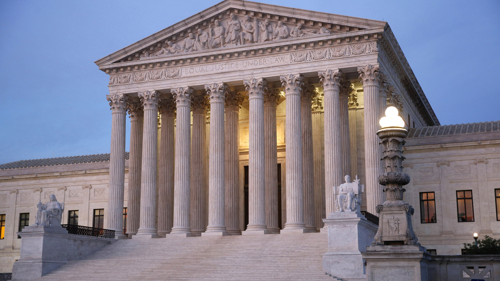
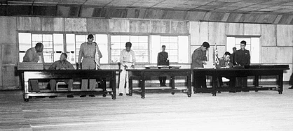
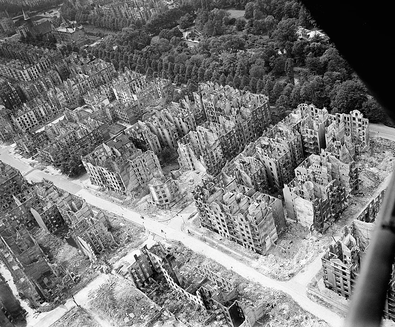

Welcome to Wikipedia,
the free encyclopedia that anyone can edit.
6,689,495 articles in English
From today's featured article
 Doom is a first-person shooter game developed and
self-published by id Software. Released on December 10,
1993, for DOS, it is the first installment in the Doom
franchise. The player assumes the role of a space
marine, popularly known as the Doomguy, fighting his
way through hordes of invading demons in military bases
on the moons of Mars and in hell. The player traverses
levels to find an exit to the next level or kill a
final boss, while fighting demons and possessed undead
humans.
Doom is a first-person shooter game developed and
self-published by id Software. Released on December 10,
1993, for DOS, it is the first installment in the Doom
franchise. The player assumes the role of a space
marine, popularly known as the Doomguy, fighting his
way through hordes of invading demons in military bases
on the moons of Mars and in hell. The player traverses
levels to find an exit to the next level or kill a
final boss, while fighting demons and possessed undead
humans.
Doom was the third major independent release by id
Software, after Wolfenstein 3D (1992) and the Commander
Keen series of episodes (1990–1991). In May 1992, id
started developing the game as around the concept of
using technology to fight demons, which would use the
fast 3D game engine being developed by John Carmack and
would have a darker style than Wolfenstein 3D or
Commander Keen. Initially intended to have a science
fiction plot by designer Tom Hall, the final game,
designed by John Romero and Sandy Petersen, is a
fast-paced action game with a limited plot. The game
was self-published by id as a set of three episodes
under the shareware model, in which the first episode
is released for free to drive interest in paying for
the rest. A retail version with an additional episode
was published in 1995 by GT Interactive as The Ultimate
Doom...
Did you know ...
- ... that in 1973 Luten Petrowsky (pictured) played the saxophone in a quartet that made the first record with jazz musicians from both East and West Germany?
- ... that after Texaco accused the academic publishers suing it for copyright infringement of profiteering, the judge called it "an odd argument ... to be made by an oil company"?
- ... that after Luigi Galleani was deported from the United States, his followers retaliated by carrying out a series of bomb attacks against government officials?
- ... that Tropicana was reportedly the first building in Singapore to contain nightclubs, restaurants, and a theatre?
- ... that in August 2021 Sheika Scott became the youngest player to score in the Costa Rican Women's Premier Division, at just 14 years old?
- ... that the newly discovered red tigrina may already be extinct?
- ... that Emi Wong, the Hong Kong YouTuber with the most subscribers, used a carpet sweeper to do lunges and bottles of laundry detergent to do squats?
- ... that the 100 gecs tree was listed as a "place of worship" on Google Maps?
In the news
-  Across the country, dozens of students are being taken to court for copying websites. The cause and reason for this movement is unkown at this time.
- The Israeli Knesset approves a judicial reform bill after months of protests against it.
- In golf, Brian Harman wins the Open Championship.
- In cycling, Jonas Vingegaard wins the Tour de France.
On this day
- 678 – Unable to penetrate the city's defences, the Sclaveni gave up their siege of the Byzantine city of Thessalonica.
- 1225 – Saint Mary's Church on Gotland, later to become Visby Cathedral, was consecrated.
- 1943 – As the Surprise Hurricane struck Texas, a United States Army Air Forces pilot made the first reconnaissance flight into a hurricane.
-  1953 – An armistice was signed (pictured) to end hostilities in the Korean War, officially making the division of Korea indefinite by creating a 4 km wide (2.5 mi) demilitarized zone across the Korean Peninsula.
- 2010 – Police in Tokyo found the mummified remains of Sogen Kato, thought to have died in 1978, leading to widespread inquiries into the status of isolated elderly people in Japan.
Today's featured picture
 The bombing of Hamburg in World War II by the Allies included numerous attacks on German civilians and civic infrastructure. As a large city and industrial centre, Hamburg's shipyards, U-boat pens and oil refineries were attacked throughout the war. In late July 1943, as part of a campaign of strategic bombing, the Allies launched Operation Gomorrah, an eight-day bombing campaign in Hamburg. In particular, during the 27/28 July raid carried out by the Royal Air Force (RAF), concentrated bombing created one of the largest firestorms of the war. Operation Gomorrah killed an estimated 37,000 people and destroyed 60% of the city's houses. An unexpected consequence of the raid was the reallocation of some German resources away from the fighting fronts. Large numbers of anti-aircraft guns and fighter aircraft were redeployed back to Germany, so aiding the Allies in their conduct of the ground war. This United States propaganda newsreel (above), released in August 1943, covers the Eighth Air Force's bombing of Hamburg during Operation Gomorrah. The newsreel's narrator states that Hamburg is "Germany's principal seaport and number-one war center" and that the bombing caused "devastation of war plants", but does not mention the deliberate destruction of entire residential neighborhoods. The intent was to reduce German industrial production for the war effort by making workers homeless – an opinion based on study of the effect on British factories of German bombing during the Blitz. This aerial photograph (below), taken by an RAF officer, shows part of the Hamburg district of Eilbek after this dehousing campaign; it was probably taken after the end of the war and certainly after rubble and other debris had been cleared.
Other areas of Wikipedia
- Community portal – The central hub for editors, with resources, links, tasks, and announcements.
- Village pump – Forum for discussions about Wikipedia itself, including policies and technical issues.
- Site news – Sources of news about Wikipedia and the broader Wikimedia movement.
- Teahouse – Ask basic questions about using or editing Wikipedia.
- Help desk – Ask questions about using or editing Wikipedia.
- Reference desk – Ask research questions about encyclopedic topics.
- Content portals – A unique way to navigate the encyclopedia.
Wikipedia's sister projects
Wikipedia is written by volunteer editors and hosted by the Wikimedia Foundation, a non-profit organization that also hosts a range of other volunteer projects:
Commons
Free media repository
MediaWiki
Wiki software development
Meta-Wiki
Wikimedia project coordination
Wikibooks
Free textbooks and manuals
Wikidata
Free knowledge base
Wikinews
Free-content news
Wikiquote
Collection of quotations
Wikisource
Free-content library
Wikispecies
Directory of species
Wikiversity
Free learning tools
Wikivoyage
Free travel guide
Wiktionary
Dictionary and thesaurus
Wikipedia languages
This Wikipedia is written in English. Many other Wikipedias are available; some of the largest are listed below.